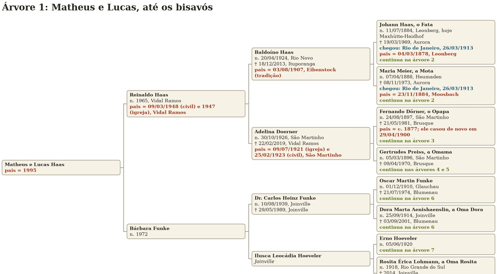
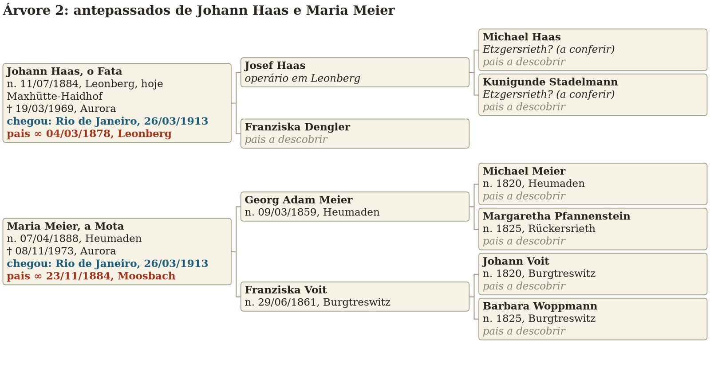
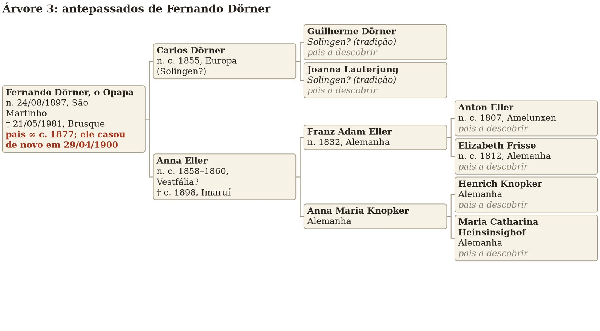
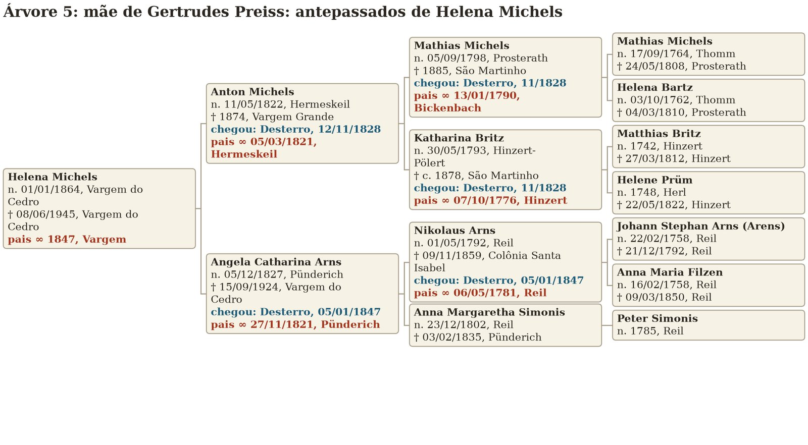
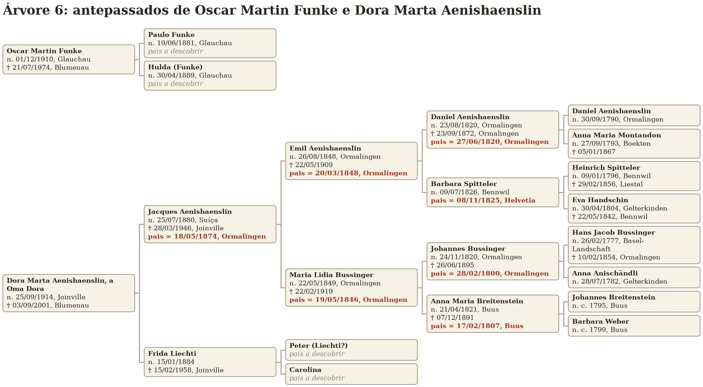

Die Stammbäume der Familie
Dies sind eure Stammbäume bis zur siebten Generation, so weit ich sie heute kenne, mit den Daten von Geburt, Tod, Heirat und Ankunft in Brasilien. Beginnt mit Baum 1, der von euch bis zu den Urgroßeltern reicht, und folgt den Hinweisen „continua na árvore”: Jeder der anderen Bäume ist ein Zweig der Familie, bis zur siebten Generation. Das Heiratsdatum der Eltern einer Person steht in ihrem eigenen Kästchen, rot, nach „pais ∞“. Wer nicht erscheint, ist mir noch unbekannt; „pais a descobrir” ist die Frage, die ich euch hinterlasse.
Die Baumdiagramme sind portugiesisch beschriftet: „n.” bedeutet geboren, „bat.” getauft, „†” gestorben, „chegou” angekommen, „pais ∞” Heirat der Eltern, „continua na árvore N” Fortsetzung in Baum N und „pais a descobrir” Eltern noch unbekannt. Ein guter Teil der älteren Daten stammt von FamilySearch, einem kollaborativen Stammbaum, und muss noch in den Büchern nachgeprüft werden. Lebende Personen erscheinen nur mit dem Jahr oder ohne Datum.





